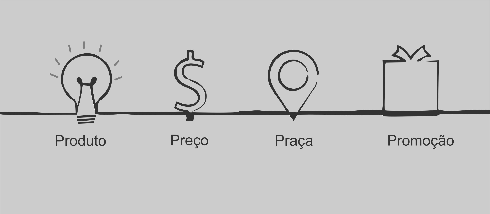

Marketing Digital
O que é Marketing Digital?
O Marketing Digital são atividades onde uma empresa busca atrair novos negócios, desenvolver uma identidade de sua marca, tudo através de midias online.
A criação de uma marca, principalmente na internet passa por muitas mudanças e pesquisas que são utilizadas para melhorar a forma de atingir seu publico alvo.
Ver maisAs principais estratégias para o Marketing Digital são:
-SEO
- Otimização de mecanismos de busca
-Inbound Marketing
- Criação de conteúdo para um publico-alvo especifico
-Marketing de Conteúdo
- Criação de conteúdos relvevante e valioso sobre o seu produto
-Os 4 P's do Marketing
-Produto
O Produto a ser vendido.
-Preço
Produtos com diferencial tendem a ter preços mais elevados.
-Praça
Onde e como o produto vai ser vendido e distribuido.
-Promoção
Como as pessoas vão conhecer o seu produto.
Ver menos